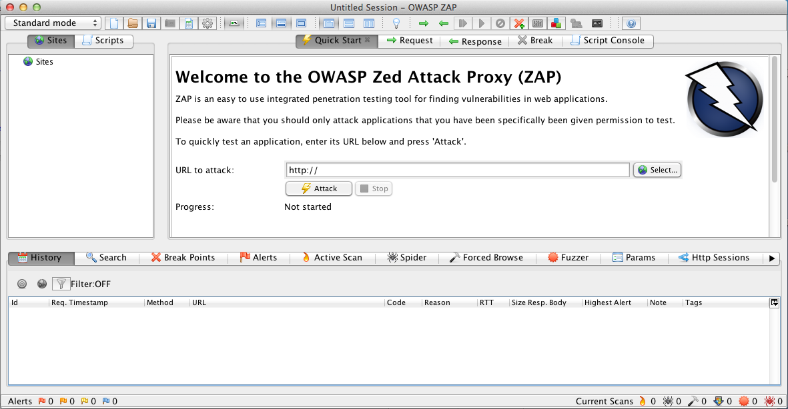
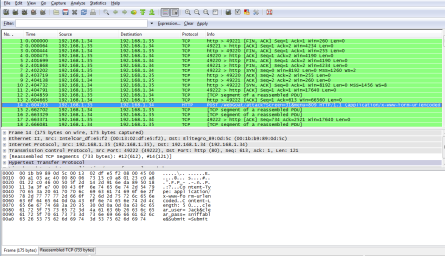

Useful Tools
Below is a list of tools we've found useful in solving the WebGoat lessons. You will need a proxy like OWASP ZAP or Paros to solve most of the lessons.
OWASP ZAP:
Like WebGoat, Zed Attack Proxy (ZAP) is a part of OWASP and is an easy to use integrated penetration testing tool for finding vulnerabilities in web applications. It is designed to be used by people with a wide range of security experience and as such is ideal for developers and functional testers who are new to penetration testing. ZAP provides automated scanners as well as a set of tools that allow you to find security vulnerabilities manually..  Webpage: https://www.owasp.org/index.php/OWASP_Zed_Attack_Proxy_ProjectThe .jar install file can be found at the OWASP ZAP Google Code Project
Modern Browsers:
Most modern browser have developer tools that will allow you to inspect and modify request data. Webpage: http://www.wireshark.org
Scanners (Attacking Proxies):
There are many vulnerability scanners for your own web applications. They can find XSS, Injection Flaws and other vulnerabilities. Below are links to three open source scanners.Nessus:http://www.nessus.org
Paros:http://www.parosproxy.org
OWASP ZAP:https://www.owasp.org/index.php/OWASP_Zed_Attack_Proxy_Project